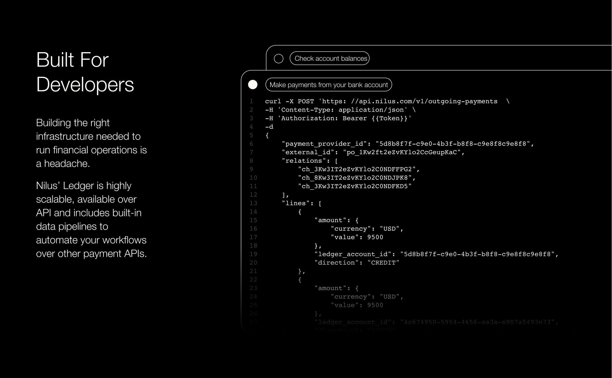
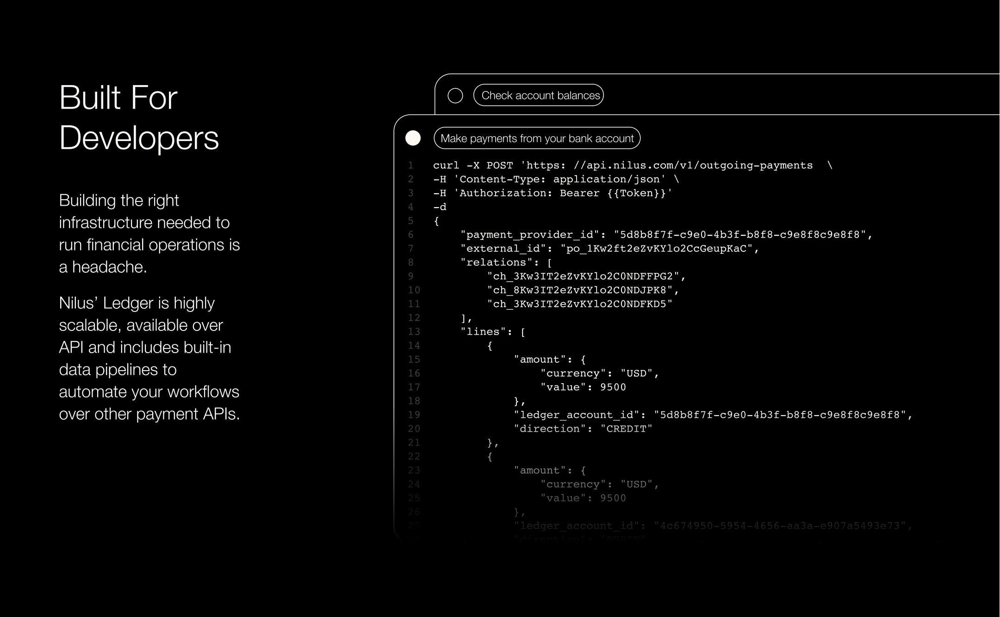
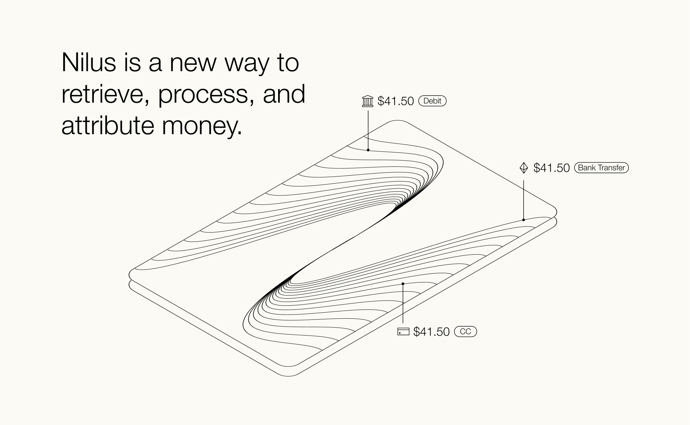
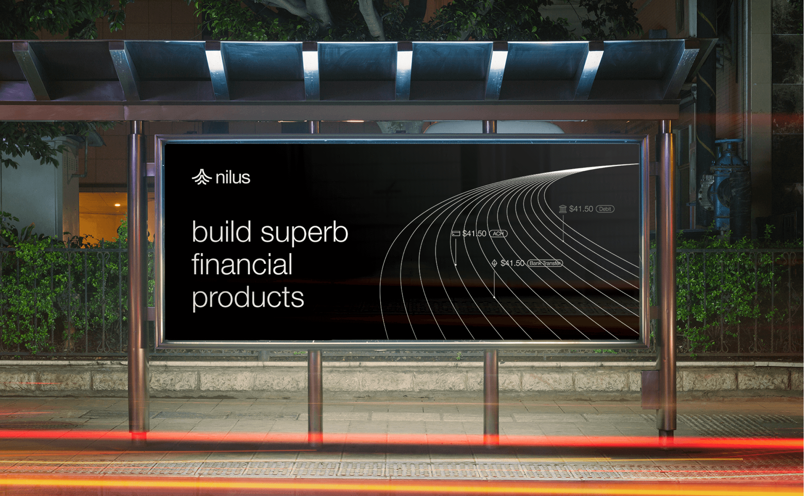
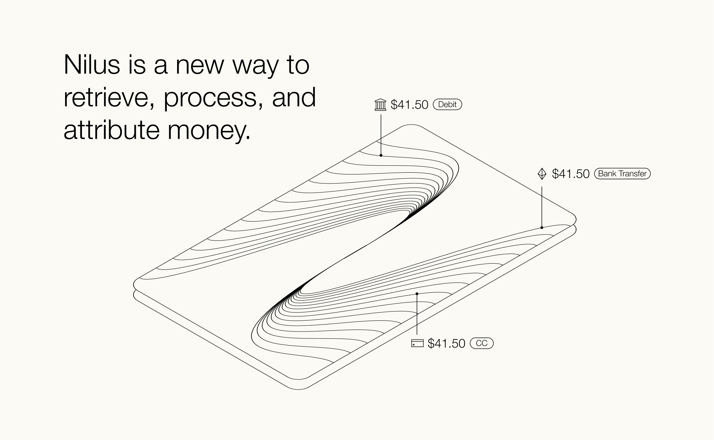
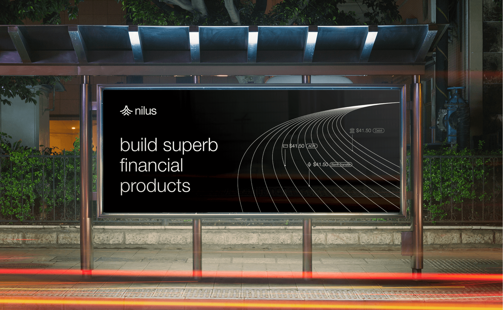

All rivers run to the sea, and money runs the world. We’re a team of
FinTech veterans. For years, we have experienced firsthand the
challenges high-growth money movers face in managing their payment
operations. We've seen FinTechs, marketplaces, and vertical SaaS
platforms continue to grow in complexity while tracking and moving money
become a challenge.We asked, how could we make Money leakages, unknown
payments, fraud, and compliance issues a thing of the past? How could we
embrace the tension between payment providers and FinOps teams? How can
we make money RUN? This is how we came up with our elastic ledger API -
our new way to retrieve, process, and attribute money. Think of it as
the motherboard for your financial operations. We imagined an immutable,
traceable, single source of financial truth - an infrastructure that
makes money transfer at scale possible, so companies can create more
value for customers and build better products faster. We're Nilus, and
we're money runners.
Client | Nilus
Art Director | Eden Vidal
Brand
Designer, Illustrator | Daryna Dubyk
Animation | Thoughts In
Motion
 



 


